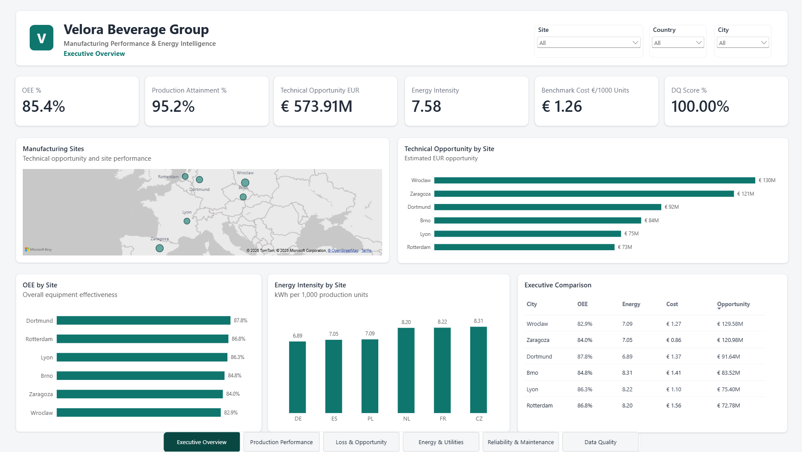
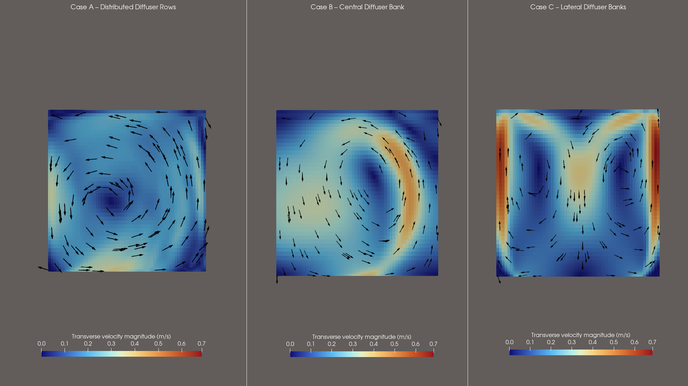
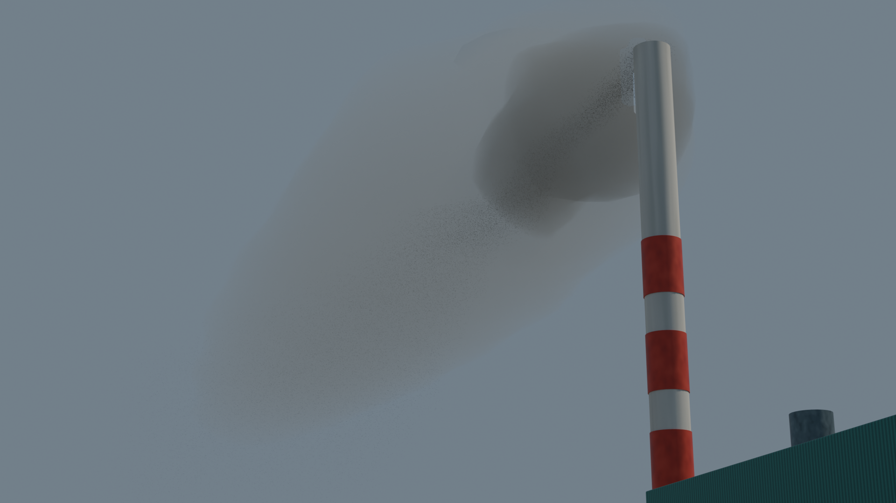
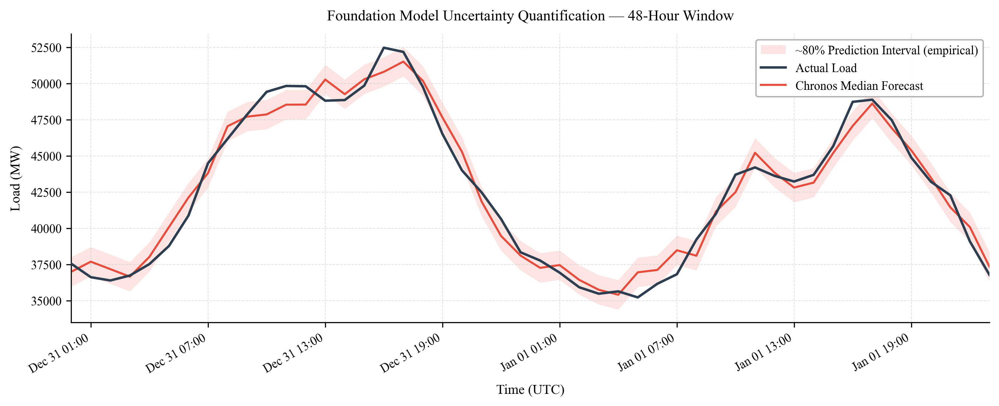

Process & Plant Systems
Manufacturing operations, process performance, troubleshooting, reaction systems, combustion, maintenance interfaces and process optimization.
Process engineer with a Chemical Engineering background, more than three years of manufacturing operations experience, and currently completing an MSc at the University of Stuttgart.
01 / Profile
Before beginning my MSc, I spent more than three years in manufacturing operations, progressing from process operations into production supervision.
That experience taught me how process stability, maintenance coordination, production data, safety, and operator decisions interact in real industrial systems.
I now combine that operational perspective with process simulation, CFD, environmental systems, energy systems, and engineering data analysis to investigate and improve physical processes.
Engineering Scope
My work is anchored in process engineering and extends into the physical, environmental and data-driven systems surrounding industrial operations.
Manufacturing operations, process performance, troubleshooting, reaction systems, combustion, maintenance interfaces and process optimization.
Aspen Plus, OpenFOAM, transport phenomena, multiphase flow, atmospheric CFD, turbulence, thermodynamics and numerical analysis.
Syngas systems, CO₂ capture, combustion, carbon intensity, industrial energy use, forecasting and cleaner process operation.
Air quality, pollutant dispersion, emissions, wastewater treatment, aeration systems, environmental monitoring and process performance.
02 / Selected Work
A selection of work spanning industrial systems, multiphase flow, simulation and manufacturing data.

A six-site manufacturing intelligence platform unifying production, downtime, energy, quality, maintenance, and equipment telemetry for OEE analysis, forecasting, anomaly detection, and predictive maintenance.
View project
A multiphase CFD study showing how diffuser placement changes circulation, gas distribution, oxygen transfer, and treatment conditions even when total airflow is held constant.
View project
Site-resolved CFD investigation of atmospheric pollutant dispersion under varying meteorological conditions across realistic terrain, buildings and industrial structures.
View project
A multi-horizon study using power-system and weather data to forecast German grid demand, renewable generation, and carbon intensity across a 24-hour horizon.
View project03 / Focus
Academic Background
MSc Candidate in Air Quality Control, Solid Waste and Wastewater Process Engineering
2024 — PresentBSc Chemical Engineering · First Class
2016 — 202004 / Contact
Open to PhD research, engineering opportunities and technical collaboration.